|
Plastik
enjeksiyon ürün ve kalýp tasarýmcýlarý ve kalýp imalatçýlarýnýn
karþýlaþtýklarý en büyük problemlerden birisi de deliklerdir.
Delikler iki gruba ayrýlýr;
- Kör
delikler
- Patlak
delikler
Özellikler
kör deliklerin plastik akýþkanýn basýncý altýnda eðilmeleri,
mevcut eksenlerinin bozulmalarý, eliptik bir delik oluþumuna
ve ürünün delik çevresinde deforme olmasýna sebep olur.
Þimdi
beraber bu sorunlara çözüm arayalým.
Kalýplanmýþ
ürün üzerindeki delikler, kalýpçýlýkta kolay yöntemlerle imal
edilirler. Kalýp çekirdeði içerisindeki erkek pimler, nihai
üründe delikler meydana getirirler. Nihai ürün üzerinde hiçbir
iþlem yapmadan, kalýp çekirdekleri içerisine yerleþtirilen
pimler sayesinde, ürün üzerinde delikler elde etmek mümkündür.
Her
iki tür pim'e de en az 0,5º çýkma açýsý verilmelidir. Çýkma
açýsýnýn verilmemesi, ürünün kalýptan çýkana kadar pim üzerinde
sürtünerek hareket etmesine sebep olur. Böylece ürünün kalýptan
çýkarýlmasý için gerekli kuvvet artar ve daha çok itici pim
kullanmamýz gerekir. Özellikle deliklerin etrafýndaki itici
pimler, karþýlaþtýklarý aþýrý kuvvet sebebi ile ürüne batar
ve yüzeyde beyazlamalar oluþtururlar. Konstruksiyon gereði
küçük çaplý itici pim kullanýyorsak, bu pimlerin kýrýlma riskleri
de artacaktýr.
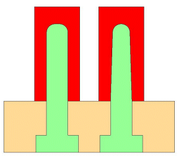
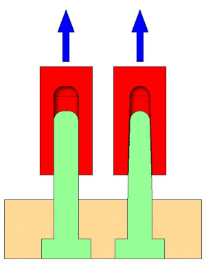
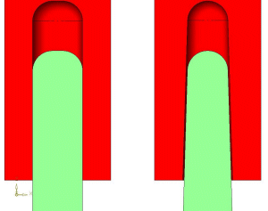
ÞEKÝL
1: Çýkma açýsý verilen deliklerde, ürün kalýptan çýkarýlmaya
baþlandýðý andan itibaren,
ürün ile pim arasýnda artan bir boþluk oluþur. Çýkma açýsý
verilmemiþ ise bu boþluk oluþmayacaðýndan,
ürün kalýptan çýkana kadar, pim üzerinde sürtünerek hareket
eder.
Patlak delikler, kör deliklere göre daha kolay kalýplanabilmektedir.
Pimler vasýtasýyla oluþan kör delikler sadece bir dayanak
noktasýna sahiptirler. Eriyik plastiðin kalýplanmasý sýrasýnda,
bu pimler, basýncýn etkisiyle eðilebilir ve merkezlerinden
kaçýk bir pozisyon alabilirler. Kör delik derinliði maksimum,
pim çapýnýn iki katý kadar olmalýdýr. Pim baþlarýna radyus
kýrýlarak, pimin akýþkan kuvvetine daha rahat dayanmasý saðlanabilir.
Aþaðýdaki
þekiller ile konuyu daha iyi anlamak mümkündür.
Eðer
kör delik derinliði, pim çapýnýn iki katýndan fazla ise, deliðin
elips olmasý yada parçanýn delik etrafýnda deforme olmasý
kaçýnýlmazdýr.
|
KÖR
DELÝKLER
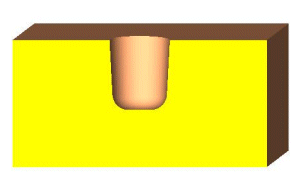
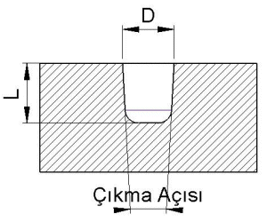
ÞEKÝL
2
- Delik
derinliði (L) pimin çapýnýn (D) iki katýndan fazla
olmamalýdýr.
- Pim
ucu raduslu yapýlmalý
- Pime
çýkma açýsý verilmelidir.
|
PATLAK
DELÝKLER
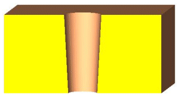
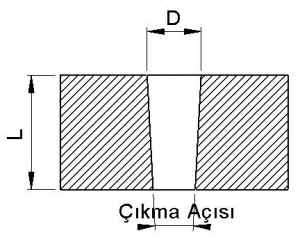
ÞEKÝL
3
- Delik
derinliði (L) pimin çapýnýn (D) altý katýndan fazla
olmamalýdýr. Eðer fazla ise pimin ucu karþýya sabitlenmelidir.
- Pime
çýkma açýsý verilmelidir.
|
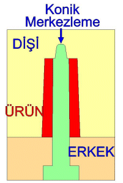
ÞEKÝL
4: Patlak delikleri çýkartan pimlerin
enjeksiyon basýncý altýnda yatmamasý için
bastýðý yüzeye konik bir þekilde merkezlenmelidir.
DELÝKLERÝN KENARLARA MESAFELERÝ
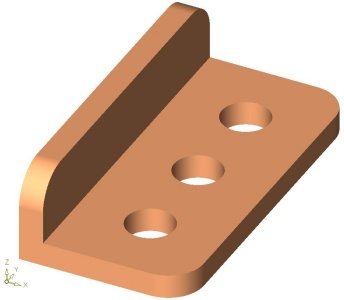 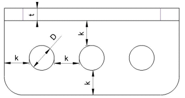
ÞEKÝL
5: t= et kalýnlýðý, D= delik çapý,
k= deliklerin kenarlardan ve birbirlerinden uzaklýklarý, (k,
en az et kalýnlýðýnýn iki katý alýnmalýdýr)
Yukarýda
gösterildiði gibi iki delik arasý mesafe, en az et kalýnlýðýnýn
iki katý kadar olmalýdýr. Delik kenarýndan en yakýn kenara
dik uzaklýkta da bu oran geçerlidir.
KAYNAK ÝZLERÝ
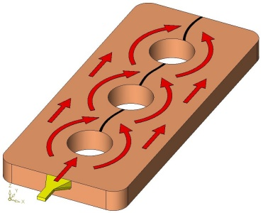
ÞEKÝL 6: Eriyik plastik sarý renkli yolluk giriþinden kalýp
boþluðuna dolar.
Ýlk deliði çýkaran pime çarpan malzeme, pimin etrafýndan dolaþýr.
Bu arada soðumaya baþladýðý için, pimin arka tarafýnda birleþen
malzemede,
siyah renkle gösterilen kaynak izleri oluþur.
Parça
dayanýmýný düþünmeden, delik yeri ve sayýsý belirlemek doðru
bir yaklaþým deðildir. Yolluk sistem tasarýmýna baðlý olarak
hemen hemen her delik etrafýnda kaynak izi oluþacaktýr. Bu
kaynak izleri, eriyik plastiðin, delikleri oluþturan pimler
etrafýndan dolaþmasý esnasýnda soðuyarak birleþmesi ile oluþurlar.
Kaynak izlerinin oluþtuðu bölge, çevredeki diðer bölgeler
kadar güçlü ve dayanýklý deðildir. Üstelik yüzey kalitesi
de düþeceðinden, estetik problemlerle karþýlaþmak mümkündür.
Tasarýmcý bu noktalarý, ürün ve kalýp tasarým aþamalarýnda
dikkate almalýdýr
Delik
eksenleri, kalýp ayrým eksenine paralel olduðunda daha kolay
imal edilirler, fakat kalýp ayrým çizgisine dik olduðu durumlarda
maça kullanýmý gerekebilir.
Bazý
durumlarda ise pim ve çekirdek karþýlýklý yüzeysel temas saðlanacak
þekilde kesilerek, maça kullanýmýna gerek duyulmaz. Tasarýmcýnýn
karþýlýklý sürtünen yüzeylerin zaman içerisinde aþýnacaðýnýn
farkýnda olmasý önemlidir. Bu bölgelerin modifikasyonu pahalý
ve zaman alan operasyonlar zincirini gerektirir.
Aþaðýda,
kalýp ayrým çizgisine dik olan deliklerin bulunduðu kalýp
örnekleri verilmiþtir:
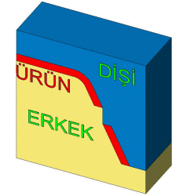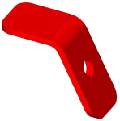
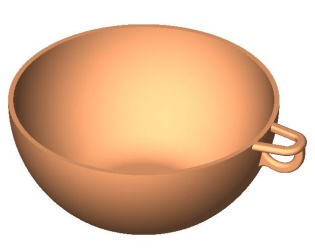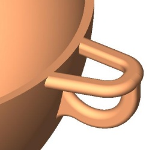
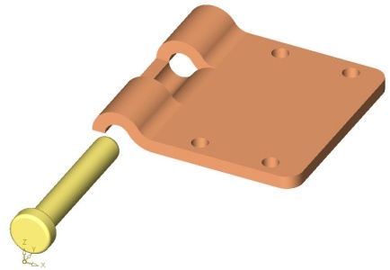
Not:
Bu raporu MS Word formatýnda indirmek için týklayýnýz
(656KB).
|